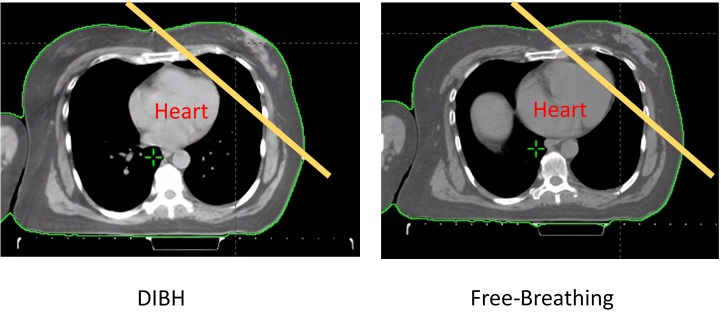
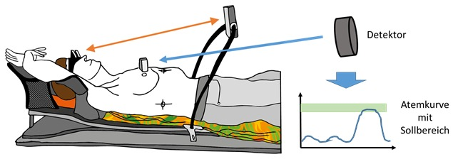
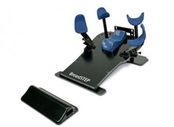

Mission Mamma: Von der Fallakte zum PLCT-Setting
Diese App ist für den parallelen Einsatz mit der Praxisstation gebaut. Du arbeitest selbstständig, unterbrichst bei Bedarf für eure 3er-Rotation am Phantom bzw. PLCT und steigst danach wieder ein. Ziel ist nicht „schnell fertig", sondern ein tragfähiges Verständnis, das du praktisch anwenden und in einer Fallvorstellung begründen kannst.
Start & Ablauf
Bevor du fachlich einsteigst, brauchst du eine saubere Orientierung: Was ist Pflicht? Wann gehst du an die Praxisstation? Was ist am Ende dein sichtbares Produkt?
Was du heute können sollst
- den Fall Frau S. fachlich einordnen
- ein PLCT-Setting für eine Standard-Mamma-BET begründet vorbereiten
- wichtige Risikoorgane, Zielvolumina und Qualitätsaspekte benennen
- deine praktische Handlung sprachlich sauber in einer Fallvorstellung darstellen
So arbeitest du sinnvoll
- Pflicht: immer bearbeiten
- Support: nutzen, wenn du Struktur brauchst
- Plus: für schnelle oder stärkere SuS
- am Ende jeder Mission steht ein Praxisanker
Pflichtauftrag: persönlicher Lernfahrplan
PflichtproduktFormuliere für dich selbst knapp, worauf du heute besonders achten willst. Wähle nicht allgemein, sondern handlungsnah.
- Was fällt dir bei Mamma-Ca. bisher noch schwer: Anatomie, Therapieablauf, Lagerung, Fachsprache oder Fallvorstellung?
- Welcher Teil der Praxis macht dir am meisten Kopfzerbrechen?
- Was willst du heute so gut verstehen, dass du es am Ende jemand anderem erklären könntest?
Pflichtauftrag: Einsatzregeln für die Rotation
VerbindlichkeitFallakte Frau S.
Hier legst du das Fundament. Du musst nicht alles auswendig wissen, aber du musst aus einem Fall die Informationen herausziehen können, die dein Handeln am Planungs-CT tatsächlich steuern.
Patientenakte Frau S.
Pflichtauftrag: Was ist sofort handlungsrelevant?
3 konkrete PunktePflichtauftrag: Was fehlt dir noch?
mind. 2 Rückfragen- Bestrahlungsvolumen nur Brust oder zusätzlich Lymphabfluss?
- Standard-Mammazange oder DIBH/weitere Technik?
- Welche Markierungen sollen gesetzt werden?
- Gibt es Bewegungseinschränkungen von Schulter oder Arm?
Standardauftrag: Antwort an die Patientin
2–3 verständliche SätzeFrau S. fragt: „Warum muss ich nach der OP noch bestrahlt werden? Es ist doch alles entfernt." Formuliere eine fachlich korrekte, ruhige und verständliche Antwort.
Grundlagen kompakt: Epidemiologie, Ätiologie, Klinik
Dieses Wissen soll nicht als isolierte Theorie hängenbleiben. Du brauchst es, damit der Fall Frau S. im Kopf einordbar wird und du weißt, worüber im Team überhaupt gesprochen wird.
Kompaktwissen Mamma-Ca.
Epidemiologie
- Häufigster bösartiger Tumor der Frau, zweithäufigste Krebstodesursache
- Ca. 70.000 Neuerkrankungen/Jahr in Deutschland
- Mittleres Erkrankungsalter: ca. 63 Jahre
- Fast jede 10. Frau erkrankt im Laufe ihres Lebens
- Besonderes Risiko: Z.n. Hodgkin-Lymphom (ca. 35 % erkranken später an Mamma-Ca.)
Ätiologie / Risikofaktoren
- Nur ca. 20 % erblich-familiär bedingt – die Mehrheit entsteht sporadisch
- Hormonsensible Faktoren: frühe Menarche, späte Menopause, Nullipara
- Genetisch: BRCA1/BRCA2-Mutation, p53-Veränderung
- Lebensstil: erhöhter Fettkonsum, mangelnde körperliche Aktivität
- Atypische duktale oder lobuläre Hyperplasie als histologischer Risikobefund
Klinik & Diagnostik
Häufig stellt die Patientin selbst die Verdachtsdiagnose durch einen tastbaren Knoten.
Diagnostischer Stufenplan:
- Mammographie (2 Ebenen) → Erstscreening und Verlauf
- Mammasonographie → ergänzend, besonders bei dichtem Gewebe
- MRT → bei Multizentrizitätsverdacht, Rezidiv, jungen Frauen mit dichtem Drüsengewebe (höchste Sensitivität)
- Stanzbiopsie / Feinnadelpunktion → obligate histologische Sicherung
Typische Symptome: tastbarer Knoten, Orangenhaut, Hauteinziehungen, Mamillenveränderungen (Sekretion, Formveränderung, Einziehung), Allgemeinsymptome bei Metastasierung.
Vertiefung (optional)
Tumor Target Therapy – Mammakarzinom Playlist
Für die Falllogik, das medizinische Gesamtbild und die Sprache des Themas.
Playlist öffnenPflichtauftrag: Grundlagenwissen sichern
4 Felder ausfüllen| Bereich | Deine Notizen |
|---|---|
| Epidemiologie Einordnung des Mammakarzinoms | |
| Ätiologie / Risikofaktoren Welche Faktoren spielen eine Rolle? | |
| Klinik / Diagnostik Symptome und Diagnostikschritte | |
| Relevanz für die MTR Warum muss ich das im praktischen Unterricht wissen? |
Standardauftrag: Frau S. im Kontext
2–3 SätzeWarum ist es für dich als MTR hilfreich zu wissen, dass Frau S. ein hormonrezeptorpositives, HER2-negatives Mammakarzinom hat – auch wenn du daraus keine Therapieentscheidung ableitest?
Anatomie, Zielgebiet und Risikoorgane
Hier geht es nicht um Selbstzweck-Anatomie. Du brauchst Orientierung: Was soll bestrahlt werden? Was muss geschont werden? Und was ist nur je nach Indikation relevant?
Vertiefung (optional)
Tumor Target Therapy – Strahlentherapie Playlist
Zur Auffrischung von Begriffen aus dem Unterricht.
Playlist öffnenMedizinphysik-Wiki – OAR
Kurze Definition und Einordnung von Risikoorganen in der Strahlentherapie.
OAR öffnenPflichtauftrag: Dreifach-Zuordnung
Zielgebiet / je nach Indikation / Risikoorgan| Struktur | Deine Zuordnung | kurze Begründung |
|---|---|---|
| Gesamte linke Brust nach BET | ||
| Tumorbett / Operationsnarbe | ||
| Herz | ||
| Ipsilaterale Lunge | ||
| Axilla | ||
| Kontralaterale Brust |
Pflichtauftrag: Warum macht links/rechts so einen Unterschied?
1–2 SätzeTherapie-Navi: Warum ist Frau S. in der Strahlentherapie?
RT ist Teil eines Gesamtkonzepts. Wenn du nur „Bestrahlung" hörst, aber nicht weißt, warum sie hier gebraucht wird, bleibt dein Handeln am PLCT oberflächlich.
Pflichtauftrag: Therapiebausteine sinnvoll ordnen
3 Schritte + BegründungPflichtauftrag: Warum RT nach BET?
2–3 Sätze- Nach BET bleibt Brustgewebe erhalten – damit bleibt auch ein Rest-Risiko im ehemaligen Tumorgebiet.
- Die RT ist eine adjuvante Maßnahme, also eine zusätzliche Sicherung nach der OP.
- Durch die postoperative RT wird das Rezidivrisiko je nach Risikoprofil um bis zu 80 % gesenkt.
- Du musst keine Tumorkonferenz nachspielen – aber die klinische Logik erklären können.
Brusterhaltende Therapie (BET)
Tumorektomie + Sentinel-Biopsie ± Axilla-Dissektion. Ca. 70–80 % aller Patientinnen werden brusterhaltend operiert.
Mastektomie (MRM) – Indikationen
- Tumordurchmesser >3 cm oder unzureichendes kosmetisches Ergebnis nach BET erwartet
- Ausgedehnte Fixierung des Tumors an Haut oder Faszien
- Multizentrisch wachsender Tumor
- Inflammatorisches Mammakarzinom (aggressive Form)
- Keine R0-Resektion bei BET erreichbar
- Patientinnenwunsch
Standardauftrag: Patientensprache
kommunikativFormuliere einen Satz, den du Frau S. sagen könntest, wenn sie fragt, warum die Bestrahlung trotz R0-Resektion nötig ist.
RT-Basics: Dosis, Fraktionierung, Zielvolumen und OAR
Hier liegt die fachliche Brücke zwischen Wissen und Präzision. Wenn du verstehst, warum jeder Millimeter zählt, verstehst du auch, warum reproduzierbare Lagerung keine Formalie ist.
Dosiskonzepte beim Mamma-Ca. – Referenz
| Konzept | Einzeldosis | Gesamtdosis | Fraktionen/Besonderheit |
|---|---|---|---|
| Normofraktionierung (Brust) | 1,8–2,0 Gy | 50,4–54 Gy | 28–30 Fx |
| Boost (Tumorbett, alternierend) | 2,0 Gy | 10–16 Gy | 5–8 Fx; gesamt therap. Dosis: 60–70 Gy |
| Hypofraktionierung (Standard) | 2,67 Gy | 40,05 Gy | 15 Fx; nach START-B-Studie |
| SIB (simultan integrierter Boost) | 2,25 Gy | ca. 63 Gy | 28 Fx; Boost simultan, nicht alternierend |
| INTRABEAM (intraoperativer Boost) | einmalig | 21 Gy | 1 Fx intraoperativ; danach perkutane RT 45 Gy |
| Thoraxwand nach MRM | 1,8–2,0 Gy | 50–50,4 Gy | inkl. Narbe; ggf. Lymphknoten |
Risikoorgane (Priorität): Herz (Prio 1 bei links), ipsilaterale Lunge, kontralaterale Brust, Rückenmark, Larynx
Vertiefung (optional)
Tumor Target Therapy – Therapieverschreibung verstehen
Optional, wenn Dosis und Fraktionierung sprachlich noch unsicher sind.
Video öffnenPflichtauftrag: Dosis und Behandlungsdauer
Rechnung + BedeutungBeispiel: 1,8 Gy × 28 = 50,4 Gy plus Boost 2,0 Gy × 8. Berechne die Gesamtdosis und erkläre in einem Satz, was das für die Behandlungsdauer bedeutet.
Pflichtauftrag: CTV → PTV → Lagerungsunsicherheit
max. 3 SätzeStandardauftrag: Was bedeutet Hypofraktionierung für Frau S.?
VergleichPlanungs-CT und RT-Techniken: Ready for PLCT
Jetzt wird aus Theorie Vorbereitung. Was brauchst du für das Setting? Welche Technik ist warum relevant? Und wie denkst du Herzschonung bei links?
Bestrahlungstechniken beim Mamma-Ca. – Kompaktübersicht
1. Mamma-Zange (Tangentiale Gegenfeldtechnik)
- 6 MV oder 15 MV Photonen; homogene Dosisverteilung der gesamten Brust
- Gantry wird 3°–5° überkippt → keine isozentrischen Gegenfelder
- Isozentrum liegt mittig in der Mamma; Feld überstrahlt Brust + Lungensaum (Atemausgleich)
- Keilfilter (manuell, automatisch oder virtuell) für homogenere Dosisverteilung


2. Erweiterte Zange mit Supra (Half-Beam-Technik)
- Zusätzliches Zielvolumen: supraklavikuläre Lymphknoten (ggf. zervikal)
- Problem klassische Kombination: Hot Spots (Dosisüberhöhung) und Cold Spots (Dosiseinfall) am Feldanschluss
- Lösung Half-Beam: Blende bis zum Zentralstrahl → ein Isozentrum auf Klavikula, keine Tischdrehung nötig → sauberer Feldanschluss


3. Boost-Varianten
- Alternierend (Narbenboost): Elektronenstehfeld, FHA 100 cm, Energie nach CT-Messung (z.B. 3 cm Tiefe → 9 MeV); 36 Sitzungen gesamt
- SIB (simultan integrierter Boost): innerhalb VMAT/IMRT, OP-Bereich separat markiert → 28 Sitzungen statt 36
- INTRABEAM (intraoperativer Boost): einmalig 21 Gy intraoperativ via kV-Röntgen; Kontraindikationen: Wundheilungsstörung, zu großer Tumor


4. Moderner Standard: VMAT + DIBH
- VMAT: dynamisch, viele Segmente mit variabler Dosisintensität, Gantry rotiert – optimale Dosiskonformität
- DIBH (Deep Inspiration Breath Hold): Patientin atmet tief ein und hält Atem → Herz verlagert sich nach kaudal/dorsal → Herzabstand ↑
- Überwachung via Oberflächenscanner (z.B. Catalyst, C-Rad); Bestrahlung nur im Atemhalteintervall
- Besondere Bedeutung bei linksseitigem Mamma-Ca. zur Herzschonung



Vertiefung (optional)
Ablauf der Vorbereitungsphase einer Bestrahlung
Pflichtvideo für den Ablaufgedanken. Schaue gezielt: Was davon braucht Frau S. heute?
Video öffnenPflichtauftrag: PLCT-Checkliste erstellen
mit in die Praxis nehmen| Bereich | Deine Notizen |
|---|---|
| Material / Hilfsmittel | |
| Lagerung | |
| Markierungen / Referenzpunkte | |
| Kommunikation mit Frau S. | |
| Typische Fehlerquellen |
Standardauftrag: Wann ist DIBH bei Frau S. eine sinnvolle Überlegung?
Herzschonung- nicht nur Lagerung nennen, sondern auch Reproduzierbarkeit und Nachvollziehbarkeit
- Markierungen und Referenzpunkte mitdenken, nicht erst nach dem CT
- bei linksseitiger Mamma Herzschonung nicht vergessen
- Kommunikation ist Teil des Settings, nicht Bonus
Praxisstation: Rollen, Beobachtung, Rückmeldung
Diesen Abschnitt öffnest du, sobald deine 3er-Gruppe an die Praxisstation geht. Er funktioniert unabhängig vom Bearbeitungsstand der anderen Missionen.
Lagerungshilfen – visuelle Referenz


Rolle A – Durchführung
führt das Setting aktiv durch, spricht zentrale Schritte laut mit und bleibt strukturiert.
Rolle B – Assistenz
bereitet Material vor, unterstützt bei Lagerung und achtet auf Ablauf sowie Referenzpunkte.
Rolle C – Beobachtung
arbeitet mit dem Beobachtungsbogen, notiert Fehlerquellen und gibt kurzes Feedback.
Pflichtauftrag: Beobachtungsbogen
während der PraxisPflichtauftrag: Praxisrückmeldung
nach der RotationNebenwirkungen, Kommunikation und Fallvorstellung
Jetzt wird das Gelernte rund. Du brauchst nicht nur Technik, sondern auch Patientensicht, MTR-Rolle und eine klare Sprache für deine Fallvorstellung.
Nebenwirkungen der Mamma-RT – Kompaktreferenz
Akute NW (bis Tag 90 nach Beginn)
- Hautrötung, Hautschuppung
- Schwellung, Überwärmung der Brust
- Pigmentierung (bei Rauchern: bräunlich-lederartig)
- Pneumonitis (Strahlenreaktion der Lunge)
Späte NW (ab Tag 91 nach Ende)
- Lungenfibrose
- Myokarditis
- Perikarditis
Pflegemaßnahmen – MTR-Empfehlungsrahmen
- Sonne und Solarium während der Therapie vermeiden
- Bepanthen-Lotion o.Ä. – NICHT unmittelbar vor der Sitzung auftragen
- Nicht zu heiß duschen; Bestrahlungsfeld schonend behandeln
- Kühlpads bei überwärmter Brust (kein direkter Eiskontakt)
- Leichte Baumwollkleidung, kein Deo im Bestrahlungsfeld
- Schmerzmittel nur nach ärztlicher Anweisung
Vertiefung (optional)
Medizinphysik-Wiki – Radiodermatitis
Zur Auffrischung von Nebenwirkungen und alltagsnahen Pflegemaßnahmen.
Radiodermatitis öffnenPflichtauftrag: Nebenwirkungen und MTR-Rolle
3 alltagstaugliche HinweisePflichtauftrag: Fallvorstellung aus MTR-Sicht
Stichwortgerüst| Baustein | Deine Stichpunkte |
|---|---|
| Patientin / Ausgangssituation | |
| Therapiekonzept / warum RT | |
| PLCT-Setting / Lagerung / Hilfsmittel | |
| Risikoorgane / Schonung / Technik | |
| Besonderheit / Kommunikation / Herausforderung |
Standardauftrag: Selbstbewertung
ReflexionWenn du schnell fertig bist oder die Gruppe noch etwas Zeit hat: Teste dein Wissen interaktiv. Das Spiel läuft direkt hier im Browser.
Das Spiel lädt – bei schlechter Verbindung einfach neu laden.
Mission abgeschlossen
Du hast die Pflichtspur bearbeitet und ein Arbeitsprotokoll aufgebaut, das sich für Praxisstation, Fallvorstellung und Dozentenfeedback nutzen lässt.
Was v4 besser macht als v3
- Kompaktwissen direkt in der App – kein Internetzugang für den Einstieg nötig
- Dosistabelle als Referenz in Mission 6
- Technik-Übersicht (Mamma-Zange, Half-Beam, DIBH, SIB) in Mission 7
- Nebenwirkungen-Referenz inkl. Pflegehinweise und Kommunikationstipp in Mission 9
- Wordwall-Lernspiel als Abschluss-Plus
- Keine externen Schriftarten – läuft vollständig offline